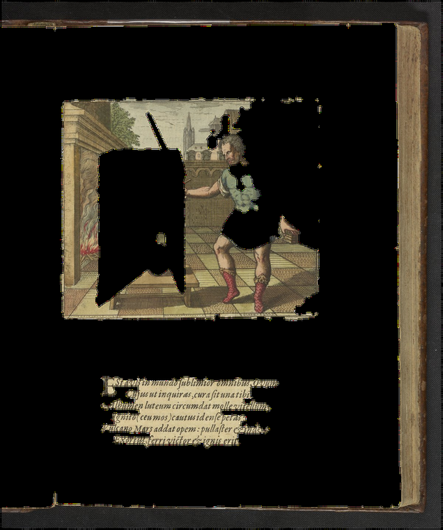

What was wrong
Six defects in the previous per-emblem renderer, each verified against the running site or the data files rather than inferred from the code.
The previous stage was a 2.5-D layer stack with a heuristic depth channel,
presented as a reconstruction of pictorial space. Moving from primitive props to real
cutouts fixed the content, and was right. But it also discarded the only
spatial model the project had ever had and replaced it with
depth = vertical_position − category_bias, which contains no information
from the engraving's perspective construction.
These are the specific consequences. All six are fixed by the pipeline described under Method.
1 · Thirty of fifty-one emblems popped exactly one card
Computed by running the old papercards.js filter logic over its own
manifest — unscored elements, minus the hardcoded bad list, plus the single-best
fallback. Distribution: one card ×30, two ×8, three ×7, four ×4, five ×1, seven ×1.
Ninety-five popped cards for the whole book. For 59% of it, the "walkable tunnel book"
was a flat photograph of a page with one thing floating in front of it.
2 · The flagship plate rendered with a black void through its middle


The backdrop was a destructively holed scan of a whole book page: leather binding, page gutter, letterpress epigram, and a rectangular hole where the vault and the figure's torso had been cut away. The renderer then excluded those cutouts as unreliable — so nothing ever filled the hole back in. Excluding a bad extraction could not be done safely, because the removal had already happened in the image.
Fixed by using the complete Claudiens plate as the backdrop. That was always the
right image: summary.json's source_image shows the extraction
masks were cut from it in the first place. The colour page-scan cutouts that shipped
alongside are from a different copy of the book at a different framing, which is the
root of the registration problem.
3 · Every scene was stretched about 37%
ROOM_W = 16, ROOM_H = 10 is an aspect of 1.60. The plates are about
1.17. Cards and backdrop were stretched by the same factor, so relative registration
survived and the distortion was invisible head-on — which is exactly why it went
unnoticed. The reconstruction takes its aspect from the plate.
4 · Vertical registration was out by 14%
Cards were positioned with y = EYE_BASE + (0.5 − cy) · 8.6 but sized
with nh · ROOM_H where ROOM_H = 10. Position and size used
different scales, so every card drifted toward the centre relative to the hole it
came from.
5 · Popping a card forward made it bigger
A card moved from the backdrop toward the viewer subtends a larger angle than the
hole it left, and nothing compensated. This is the structural cause of Boreas reading
as a giant pasted over a small landscape — not a tuning error. The fix is one term:
scale each card by z_target / z_true so its subtended angle is preserved
at every intermediate position. It is what makes the "open the book" slider hold the
composition together as it opens.
6 · The gallery loaded 1,509 full-resolution JPEGs at once
Measured live in the page: document.images.length === 1509,
document.body.scrollHeight === 65106, and after roughly thirty seconds
only 103 images had decoded. No thumbnail tier, no loading="lazy", no
IntersectionObserver. The page is functionally blank on first load. Every image on
this site is lazy-loaded and served from a downscaled tier.
A data-integrity note, offered neutrally
Three different counts circulate for the same corpus.
EmblemPapercraft/CLAUDE.md says 743 labelled figures;
EmblemPrintShop/data/visual_elements.json holds 863 records; the manifest
the old renderer shipped held 187 non-backdrop layers; and its declared source
directory currently holds 151. The shipped manifest was stale with respect to the
directory it was built from. Which number should be canonical is not for this page to
decide — but one of them should be, before more is built on top.
This phase rebuilt from the source directory directly: 150 elements across 51 plates, each re-cut against the plate its mask was made from, each with a measured foot line and a stated confidence.
Full evaluation of both this project and 3dprintlab, with the ordered
revision plan and the three.js skill mapping: REVISIONPROPOSAL.md in the
repository.